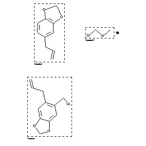

|  |
| FA | RX(1); FLST(1); RX(1) |
Reaction (1 of 1)
| Reaction ID | 1767852 |
| Reactant BRN | 136380; 505943 |
| Reactant | 5-allyl-benzo[1,3]dioxole; chloro-methoxy-methane |
| Product BRN | 174506 |
| Product | 5-allyl-6-chloromethyl-benzo[1,3]dioxole |
| No. of Reaction Details | 1 |
Reaction Details (1 of 1)
| Reaction Classification | Preparation |
| Yield | 85 percent (BRN=174506) |
| Solvent | acetic acid |
| Citation Pointer | 5833049; Journal; Barreiro, Eliazer J.; Costa, Paulo R. R.; Coelho, Fernando A. S.; Farias, Florence M. C. de; JRMPDM; J.Chem.Res.Miniprint; EN; 7; 1985; 2301-2332; |
Reference (1 of 1)
| Citation Number | 5833049 |
| Document Type | Journal |
| Authors | Barreiro, Eliazer J.; Costa, Paulo R. R.; Coelho, Fernando A. S.; Farias, Florence M. C. de |
| CODEN | JRMPDM |
| Journal Title | J.Chem.Res.Miniprint |
| Language Code | EN |
| Number | 7 |
| Publication Year | 1985 |
| Page | 2301-2332 |